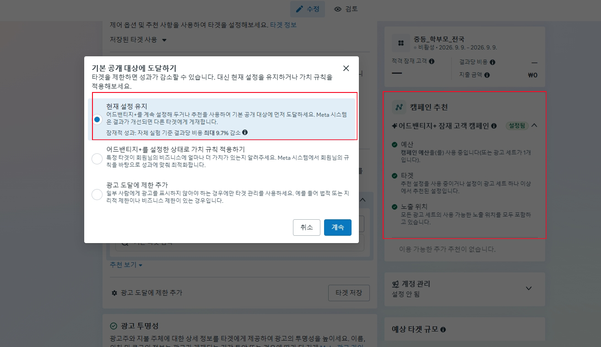
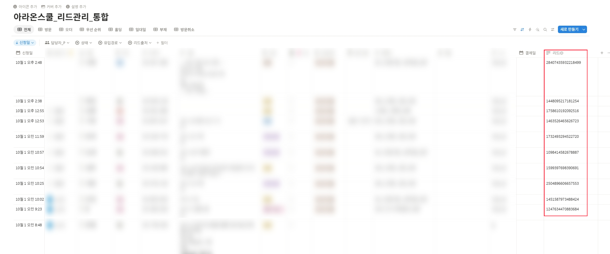
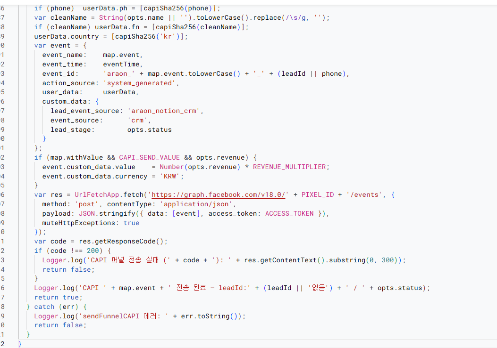
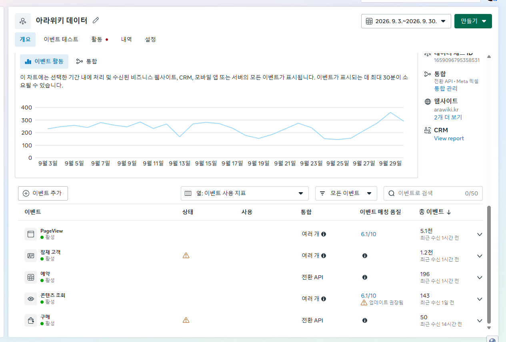
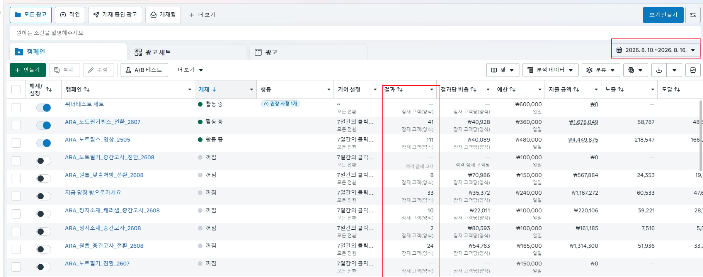
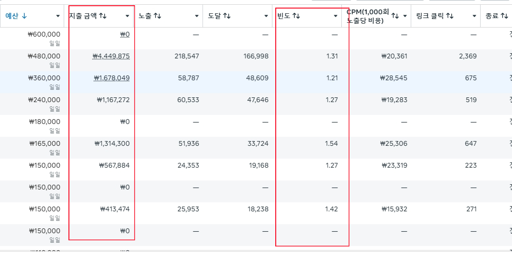
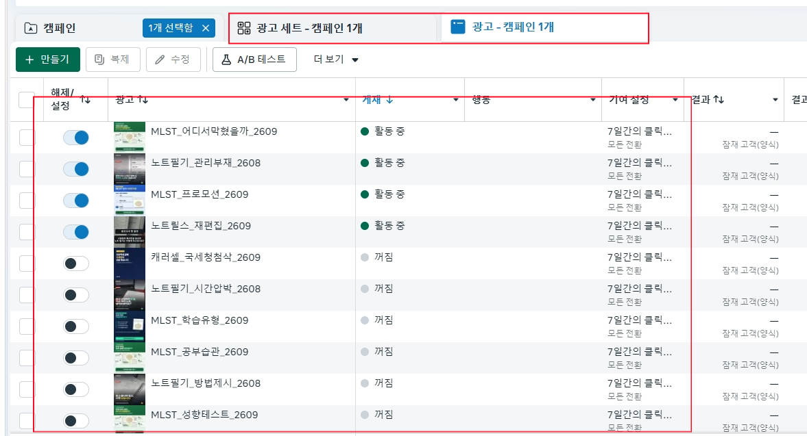
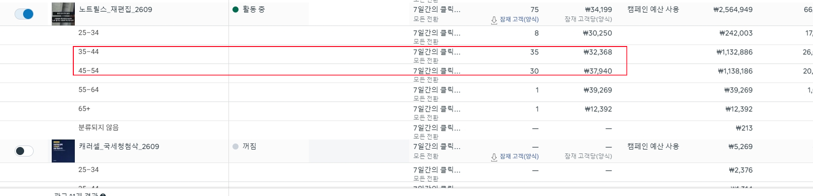
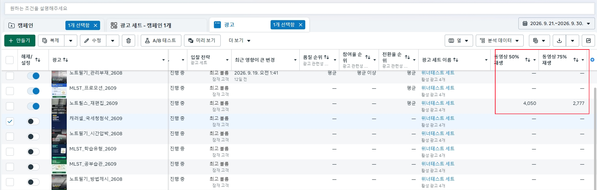
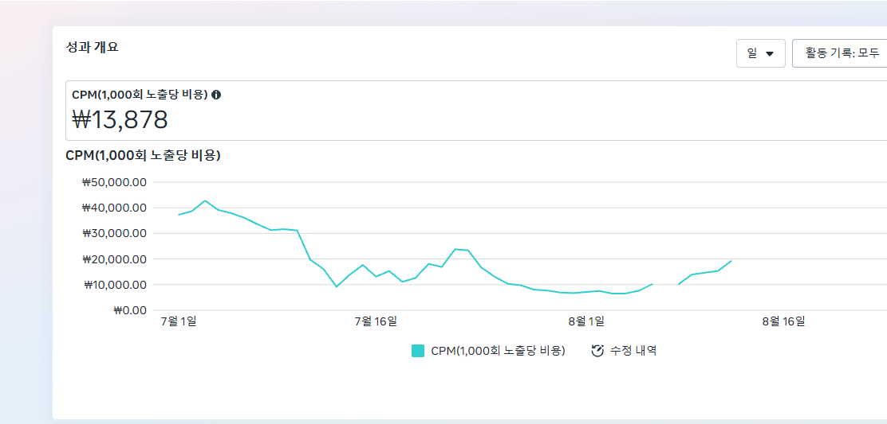

1편이 "광고 하나 올리는 법"이라면, 이 문서는 "광고를 돈 값 하게 굴리는 법"입니다. 왜 이렇게 하는지 이유까지 담았습니다. 숫자를 다루는 판단이 많아, 광고를 이어받을 담당자가 차분히 읽고 이해하는 것을 전제로 합니다.
같은 메타 광고지만, 하는 일이 완전히 다릅니다.
광고는 올리는 게 10%, 굴리는 게 90%입니다. 잘못 굴리면 돈만 나가고 신청(리드)은 안 들어옵니다. 이 문서는 그 "굴리는 판단"의 원칙을 담았습니다.
외우려 하지 마세요. "왜 이렇게 하는가"를 이해하면 됩니다. 메타 화면은 계속 바뀌지만, 아래 원리는 잘 안 바뀝니다. 원리를 알면 화면이 바뀌어도 판단할 수 있습니다.
메타 광고에서 가장 많이 오해하는 것. 이것만 이해해도 절반은 됩니다.
예전에는 "35~45세 여성, 교육 관심사"처럼 우리가 타겟을 직접 정했습니다. 지금 메타는 "타겟은 우리(메타 AI)가 알아서 찾을게요"라고 합니다. 이게 어드밴티지+ 오디언스입니다. 우리가 소재와 목표만 주면, 메타가 "이 광고에 반응할 사람"을 알아서 찾습니다.
어드밴티지+가 켜져 있으면, 우리가 설정한 나이·성별·관심사는 그냥 "참고용 제안"입니다. 메타는 무시할 수 있고, 실제로 무시합니다. 메타가 반드시 지키는 것은 딱 세 가지뿐입니다:
어드밴티지+를 쓰는 한, 최소 연령은 18~25세 사이에서만 정할 수 있습니다. 즉 "최소 30세"처럼 25세보다 높게는 강제할 수 없습니다. "37~59세 학부모만" 보여주고 싶어도, 어드밴티지+가 켜져 있으면 그건 제안일 뿐 — 메타는 25세 이하·젊은 층에도 광고를 뿌립니다.
"반드시 37~59세만"으로 하려면 어드밴티지+ 오디언스를 끄고 기존 방식(상세 타겟)으로 바꿔야 합니다. 그럼 나이·성별이 제안이 아니라 강제가 됩니다. 단, 끄는 순간 러닝(학습)이 리셋되어 성과가 잠시 흔들립니다.
메타는 "싼 리드"를 잘 찾습니다. 그런데 싼 리드가 좋은 리드가 아닙니다. 예를 들어 25~34세는 폼(신청서)을 잘 냅니다. 그래서 메타는 "이 사람들한테 뿌리면 싸게 리드가 나오네?" 하고 그쪽으로 예산을 몰아버립니다. 그런데 그들은 오더(결제)를 안 합니다. 우리 고객은 학부모(37~59세)인데 말입니다.
어드밴티지+는 "싼 리드"를 찾지 "살 사람"을 찾는 게 아닙니다. 그래서 오더 신호(CAPI)를 메타에 줘야 메타가 "살 사람"을 찾기 시작합니다. 그게 다음 섹션입니다.

"폼 내는 사람" 말고 "오더하는 사람"을 메타가 찾게 만드는 장치.
지금까지 메타에 간 신호는 "폼 제출(Lead)" 하나뿐이었습니다. 그래서 메타는 "폼 잘 내는 사람"을 찾아왔습니다. 그런데 폼 잘 내는 사람(25~34세)은 오더를 안 합니다. 메타는 누가 실제로 결제했는지 몰랐기 때문입니다.
전환 API(CAPI, Conversion API)는 우리 노션(CRM)의 상태 변화를 메타에 거꾸로 알려주는 길입니다.
즉 픽셀이 "웹사이트·폼에서 일어난 일"을 메타에 보내는 기본 장치라면, CAPI는 "노션에서 일어난 일(방문·오더)"까지 메타에 보내주는 추가 장치입니다. 이게 있어야 메타가 "싼 리드"가 아니라 "살 사람"을 찾습니다.
① event_time(이벤트 시간)은 7일 이내만 허용됩니다. 7일 지난 과거 오더는 메타가 거부합니다 → 과거 소급 전송 불가.
② 효과가 나타나기까지 약 1개월 걸립니다 (메타 공식). 켜고 바로 효과를 기대하면 안 됩니다.
③ 이건 개발·설정 영역입니다. CAPI 코드가 꼬이면 조용히 아무것도 안 쏩니다 — 이상하면 담당자/개발에 반드시 확인.
방문 → Schedule · 오더·미납 → Purchase(매출 전송) · 결보·취소·당취 → 전송 안 함(매출 0원)



메타 알고리즘이 "학습"을 끝내려면 데이터가 일정량 필요합니다.
메타는 "최적화 이벤트"(우리가 목표로 삼은 행동)가 주 50건 정도 쌓여야 알고리즘이 안정적으로 학습합니다. 50건이 안 되면 메타가 "누구한테 뿌려야 할지" 확신을 못 해 성과가 들쭉날쭉합니다.
계정 전체가 아니라 광고세트 하나당 주 50건입니다. 그래서 광고세트를 너무 여러 개로 쪼개면, 각각이 50건을 못 채워 전부 학습 부족에 빠집니다. (아래 '무한복제 금지'와 연결)
최적화 이벤트는 "주 50건이 나오는 행동"이어야 합니다. 우리 퍼널에서:
즉 "오더"로 바로 최적화하고 싶지만 건수가 부족합니다. 그래서 "방문"을 최적화 이벤트로 두는 게 현실적입니다. 단, 방문도 광고세트로 쪼개면 50건이 안 되니 광고세트 통합이 필요할 수 있습니다.
"주 50건 × 리드 단가(CPL)"로 필요한 최소 예산이 나옵니다. 예를 들어 방문 CPL이 높으면, 주 50 방문을 만들 예산이 그만큼 필요합니다. 예산이 목표 건수를 못 받치면 학습이 안 됩니다.

예산을 잘못 만지면 성과가 무너지거나 계정이 위험해집니다.
한 번에 크게 올리면 메타 학습이 리셋되고, 이상 행동으로 감지돼 계정이 위험합니다. "빈도 1.1"은 같은 사람한테 1.1번밖에 안 보여줬다는 뜻 = 아직 보여줄 사람이 많다 = 올려도 됨. 빈도가 3 넘으면 같은 사람한테 계속 보여주는 것 = 소진 = 올려도 낭비.
예산을 조정하면(특히 API/MCP로) 메타가 광고를 자동으로 일시중지시킬 때가 있습니다. 모르고 넘어가면 그날 광고가 안 나갑니다. 예산 바꾼 뒤엔 반드시 "게재 중"인지 다시 확인하고, 꺼졌으면 다시 켜세요.
CPM(노출 단가)이 올랐다고 예산을 줄이면, 메타는 더 싼 인벤토리(질 낮은 노출)로 갑니다. 실제로 채리 캠페인은 삭감 후 CPM이 더 떨어졌습니다(싼 노출로 감). 삭감으로 CPM을 고치려 하지 마세요.

잘 되는 걸 복제해서 여러 개 돌리면 — 서로 잡아먹습니다.
메타 광고는 경매(옥션)로 노출이 정해집니다. 같은 타겟을 노리는 우리 광고가 여러 개면, 우리 광고끼리 같은 사람을 두고 경매에서 경쟁합니다. 즉 내 돈으로 내 광고 단가를 올리는 꼴 — 이게 자기잠식(cannibalization)입니다.
"이 소재 잘 되네?" 하고 똑같이 복제해서 여러 캠페인에 돌리면, ① 서로 옥션에서 경쟁해 단가 상승 ② 각 광고세트가 주 50건을 못 채워 학습 부족 ③ 메타가 어뷰징(악용)으로 의심. 삼중으로 손해입니다.
여러 소재를 테스트하고 싶으면, 캠페인을 늘리지 말고 한 캠페인(또는 광고세트) 안에 소재(광고)를 여러 개 넣습니다. 그럼:
"다양성은 크리에이티브(소재)에, 판단은 캠페인 레벨에." 즉 소재는 여러 개 넣되, 캠페인·광고세트는 최대한 합쳐서 각각이 학습량(주 50건)을 채우게 합니다.
흩어진 위너 소재들을 한 캠페인으로 합치면, 메타가 처음부터 다시 학습합니다(러닝 리셋). 합친 직후 하루이틀은 성과가 요동치니, 3~4일은 지켜본 뒤 판단하세요. 하루치로 "망했다" 판단 금지.

어떤 소재를 끄고 어떤 소재를 밀지 — 판단의 핵심.
CPL이 싸다고 좋은 소재가 아닙니다. 실제로 CPL 1위 소재가 오더 0이었고, CPL 9위 소재가 ROAS 3.78이었습니다. CPL은 리드의 가격이지 가치가 아닙니다. 최종 판단은 반드시 ROAS(매출÷광고비)로 합니다.
CPM이 2만 이상(품질 통과)이고 → 완주율 좋고 → 연령 35~54 중심이고 → ROAS가 받쳐주면 위너. 단, 이 모든 걸 보고 최종 판단은 사람이 합니다. 숫자가 판단을 대신하지 않습니다.
월 중간에 볼 때는 분모(기간)를 분자와 맞춰야 합니다. "13일치 매출을 31일치 광고비로 나누면" ROAS가 착시로 낮게 나옵니다.


앞의 개념이 실제로 어떻게 터지는지 보여주는 실화입니다.
잘 돌던 채리 소재가 어느 날부터 CPM이 계단식으로 붕괴했습니다(3만 → 9천). 리드도 끊겼습니다. 처음엔 "소재가 죽었나?" 했지만 — 소재는 멀쩡했습니다. 메타가 타겟을 바꾼 것이었습니다.
지출은 그대로인데 노출만 3배로 늘었습니다(같은 돈으로 더 싼 노출). 연령을 보니 25~34세 노출이 12배로 폭증했습니다. 그들은 리드는 내지만 오더는 안 합니다. 35~54세(진짜 고객) 노출은 그대로였는데, 싼 25~34세가 전체를 덮어버린 것입니다.
숫자 하나(리드 끊김)만 보고 "소재 교체"로 달려가지 마세요. CPM·연령·완주율을 함께 보면 진짜 원인(딜리버리)이 보입니다. 그리고 하루치로 단정하지 마세요 — 채리도 3일 붕괴 후 반등했습니다.
